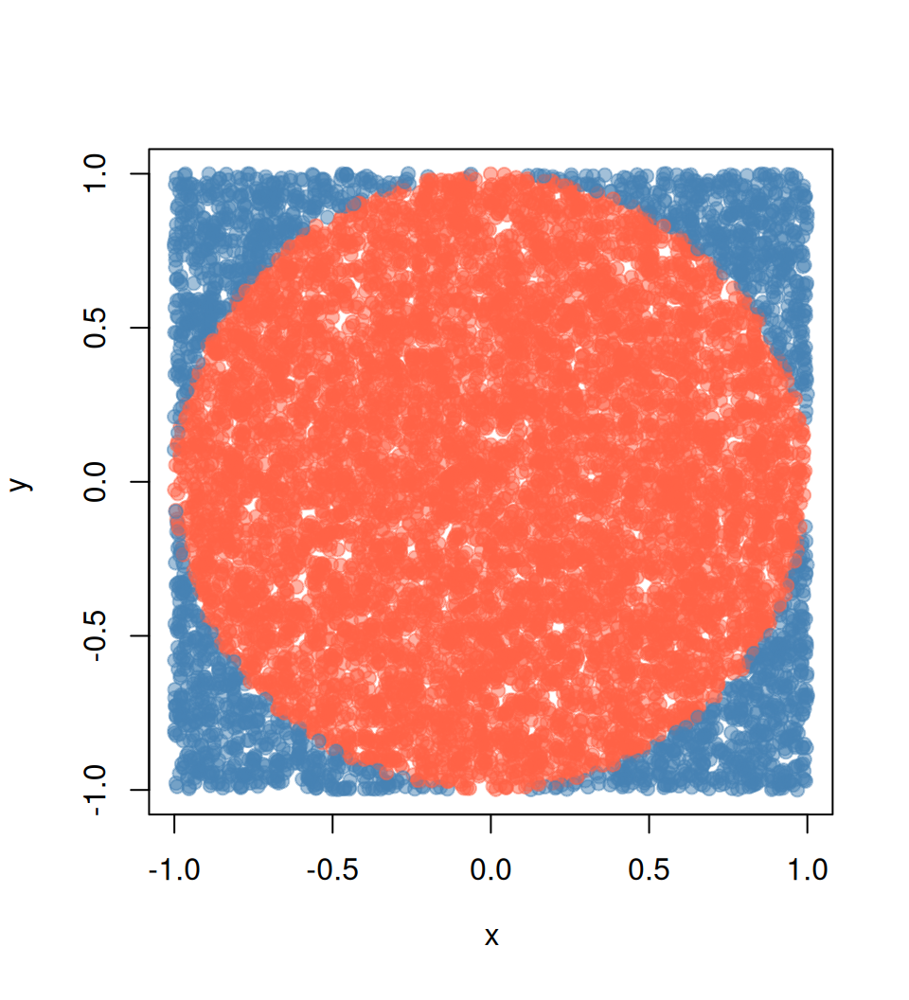

SLURM con Simulación de π
Nota de Traducción
Esta versión del capítulo fue traducida de manera automática utilizando IA. El capítulo aún no ha sido revisado por un humano.
Simulando pi
El siguiente es un ejemplo que muchas personas (incluyéndome) han usado para ilustrar computación paralela con R. El ejemplo es directo: queremos aproximar pi haciendo algunas simulaciones de Monte Carlo.
Sabemos que el área de un círculo es A = \pi r^2, que es equivalente a \pi = A/r^2, así que si podemos aproximar el Área de un círculo, entonces podemos aproximar \pi. ¿Cómo hacemos esto?
Usando experimentos de Monte Carlo, podemos aproximar la probabilidad de que un punto aleatorio x caiga dentro del círculo unitario usando la siguiente fórmula:
\hat p = \frac{1}{n}\sum_i \mathbf{1}(x \in \mbox{Círculo})
Esta aproximación, \hat p, multiplicada por el área del cuadrado que contiene al círculo, que tiene un área igual a (2\times r)^2, así, finalmente podemos escribir
\hat \pi = \hat p \times (2\times r)^2 / r^2 = 4 \hat p
Enviando trabajos a Slurm
Trabajaremos principalmente enviando trabajos usando la función sbatch. Esta función toma como su argumento principal un archivo bash con el programa a ejecutar. En el caso de R, un archivo bash regular se ve algo así:
#!/bin/sh
#SBATCH --job-name=sapply
#SBATCH --time=00:10:00
module load R/4.2.2
Rscript --vanilla 01-sapply.REste archivo tiene tres componentes:
Las banderas de Slurm
#SBATCH: Estas entradas parecidas a comentarios pasan opciones de Slurm al trabajo. En este ejemplo, solo especificamos las opcionesjob-nameytime. Otras opciones comunes incluiríanaccountypartition.Cargando R
module load R/4.2.2: Dependiendo de la configuración de tu sistema, puedes o no necesitar cargar módulos o ejecutar scripts bash antes de poder ejecutar R. En este ejemplo, estamos cargando R versión 4.2.2 usandoLMod(ver sección anterior).Ejecutando el script R: Después de especificar opciones de Slurm y cargar lo que necesita ser cargado antes de ejecutar R, estamos usando
RScriptpara ejecutar el programa que escribimos.
El envío se hace entonces como sigue:
sbatch 01-sapply.slurmLos siguientes ejemplos tienen dos archivos, un script bash y un script R, para ser llamado por Slurm.
Caso 1: Trabajo único, trabajo de un solo núcleo
La forma más básica es enviar un trabajo usando el comando sbatch. En este caso, debes tener dos archivos: (1) Un script R y (2) un script bash. p. ej.
Los contenidos del script R (01-sapply.R) son:
# Model parameters
nsims <- 1e3
n <- 1e4
# Function to simulate pi
simpi <- function(i) {
p <- matrix(runif(n*2, -1, 1), ncol = 2)
mean(sqrt(rowSums(p^2)) <= 1) * 4
}
# Approximation
set.seed(12322)
ans <- sapply(1:nsims, simpi)
message("Pi: ", mean(ans))
saveRDS(ans, "01-sapply.rds")Los contenidos del archivo bash (01-sapply.slurm) son:
#!/bin/sh
#SBATCH --job-name=sapply
#SBATCH --time=00:10:00
module load R/4.2.2
Rscript --vanilla 01-sapply.RCaso 2: Trabajo único, trabajo multinúcleo
Imagina que nos gustaría usar más de un procesador para este trabajo, usando la función parallel::mclapply del paquete parallel.1 Entonces, además de adaptar el código, necesitamos decirle a Slurm que estamos usando más de un núcleo por tarea, como en el siguiente ejemplo:
Script R (02-mclapply.R):
# Model parameters
nsims <- 1e3
n <- 1e4
ncores <- 4L
# Function to simulate pi
simpi <- function(i) {
p <- matrix(runif(n*2, -1, 1), ncol = 2)
mean(sqrt(rowSums(p^2)) <= 1) * 4
}
# Approximation
set.seed(12322)
ans <- parallel::mclapply(1:nsims, simpi, mc.cores = ncores)
ans <- unlist(ans)
message("Pi: ", mean(ans))
saveRDS(ans, "02-mclpply.rds")Archivo bash (02-mclapply.slurm):
#!/bin/sh
#SBATCH --job-name=mclapply
#SBATCH --time=00:10:00
#SBATCH --cpus-per-task=4
module load R/4.2.2
Rscript --vanilla 02-mclapply.RTrabajos con el paquete slurmR
El paquete R slurmR (Vega Yon and Marjoram 2019, 2022) es un envoltorio ligero de Slurm. Las funciones principales del paquete son la familia *apply–principalmente a través de arrays de trabajos Slurm–y makeSlurmCluster()–que es un envoltorio de makePSOCKcluster.
Esta sección ilustrará cómo enviar trabajos usando la función makeSlurmCluster() y Slurm_sapply. Además, el último ejemplo demuestra cómo podemos omitir escribir scripts Slurm completamente usando la función sourceSlurm() incluida en el paquete.
Caso 3: Trabajo único, trabajo multinodo
En este caso, no hay una forma simple de enviar un trabajo multinodal a Slurm; a menos que uses el paquete slurmR.2 En este ejemplo, combinaremos slurmR con la función parSapply del paquete parallel para enviar un trabajo multinodal usando la función makeSlurmCluster(). Con ella, slurmR enviará un trabajo solicitando njobs tareas (procesadores) que podrían abarcar múltiples nodos,3 y crear un clúster Socket de él (como usar makePSOCKcluster.) Una cosa a tener en mente es que los clústeres Socket están limitados en el número de conexiones que una sola sesión R puede abarcar. Puedes leer más sobre eso aquí y aquí.
Script R (03-parsapply-slurmr.R):
# Model parameters
nsims <- 1e3
n <- 1e4
ncores <- 4L
# Function to simulate pi
simpi <- function(i) {
p <- matrix(runif(n*2, -1, 1), ncol = 2)
mean(sqrt(rowSums(p^2)) <= 1) * 4
}
# Setting up slurmR
library(slurmR) # This also loads the parallel package
# Making the cluster, and exporting the variables
cl <- makeSlurmCluster(ncores)
# Approximation
clusterExport(cl, c("n", "simpi"))
ans <- parSapply(cl, 1:nsims, simpi)
# Closing connection
stopCluster(cl)
message("Pi: ", mean(ans))
saveRDS(ans, "03-parsapply-slurmr.rds")Archivo bash (03-parsapply-slurmr.slurm):
#!/bin/sh
#SBATCH --job-name=parsapply
#SBATCH --time=00:10:00
module load R/4.2.2
Rscript --vanilla 03-parsapply-slurmr.RCaso 4: Múltiples trabajos, un solo/múltiples núcleos
Otra forma de enviar trabajos es usando arrays de trabajos. Un array de trabajos es un trabajo repetido njobs veces con la misma configuración. La principal diferencia entre réplicas es lo que haces con la variable de entorno SLURM_ARRAY_TASK_ID. Esta variable se define dentro de cada réplica y puede usarse para hacer el “subtrabajo” dependiendo de eso.
Aquí hay un ejemplo rápido usando R
ID <- Sys.getenv("SLURM_ARRAY_TASK_ID")
if (ID == 1) {
...[haz esto]...
} else if (ID == 2) {
...[haz eso]...
}El paquete R slurmR hace fácil enviar arrays de trabajos. Nuevamente, con la simulación de pi, podemos hacerlo de la siguiente manera:
Script R (04-slurm_sapply.R):
# Model parameters
nsims <- 1e3
n <- 1e4
# ncores <- 4L
njobs <- 4L
# Function to simulate pi
simpi <- function(i, n.) {
p <- matrix(runif(n.*2, -1, 1), ncol = 2)
mean(sqrt(rowSums(p^2)) <= 1) * 4
}
# Setting up slurmR
library(slurmR) # This also loads the parallel package
# Approximation
ans <- Slurm_sapply(
1:nsims, simpi,
n. = n,
njobs = njobs,
plan = "collect",
tmp_path = "/scratch/vegayon" # This is where all temp files will be exported
)
message("Pi: ", mean(ans))
saveRDS(ans, "04-slurm_sapply.rds")Archivo bash (04-slurm_sapply.slurm):
#!/bin/sh
#SBATCH --job-name=slurm_sapply
#SBATCH --time=00:10:00
module load R/4.2.2
Rscript --vanilla 04-slurm_sapply.RUno de los principales beneficios de usar este enfoque en lugar de la función makeSlurmCluster (y así, trabajar con un clúster SOCK) son:
El número de trabajos no está limitado aquí (solo por el administrador, pero no por R).
Si un trabajo falla, entonces podemos volver a ejecutarlo usando
sbatchuna vez más (ver ejemplo aquí).Puedes verificar los logs individuales de cada proceso usando la función
Slurm_lob().Puedes enviar el trabajo y salir de la sesión R sin esperar a que finalice. Siempre puedes leer de vuelta el trabajo usando la función
read_slurm_job([ruta-al-temp])
Caso 5: Omitiendo el archivo .slurm
El paquete slurmR tiene una función llamada sourceSlurm que puede usarse para evitar crear el archivo .slurm. El usuario puede agregar las opciones SBATCH al principio del script R (incluyendo la línea #!/bin/sh) y enviar el trabajo desde R como sigue:
Script R (05-sapply.R):
#!/bin/sh
#SBATCH --job-name=sapply-sourceSlurm
#SBATCH --time=00:10:00
# Model parameters
nsims <- 1e3
n <- 1e4
# Function to simulate pi
simpi <- function(i) {
p <- matrix(runif(n*2, -1, 1), ncol = 2)
mean(sqrt(rowSums(p^2)) <= 1) * 4
}
# Approximation
set.seed(12322)
ans <- sapply(1:nsims, simpi)
message("Pi: ", mean(ans))
saveRDS(ans, "05-sapply.rds")Desde la consola R (está bien si estás en el nodo cabeza)
slurmR::sourceSlurm("05-sapply.R")¡Y voilá! Se generará un archivo bash temporal para enviar el script R a la cola. El siguiente video muestra una posible salida en el CHPC de la Universidad de Utah con slurmR versión 0.5-3:
Esta función es una especie de envoltorio de
makeForkcluster. Forking proporciona una forma de duplicar un proceso en el SO sin replicar la memoria, lo cual es tanto más rápido como eficiente.↩︎Aunque posible, la mayoría de trabajos multinodo serán asignados si no hay suficientes hilos dentro de un solo nodo. Recuerda que Slurm no ejecuta los trabajos sino que reserva recursos computacionales para que los ejecutes.↩︎